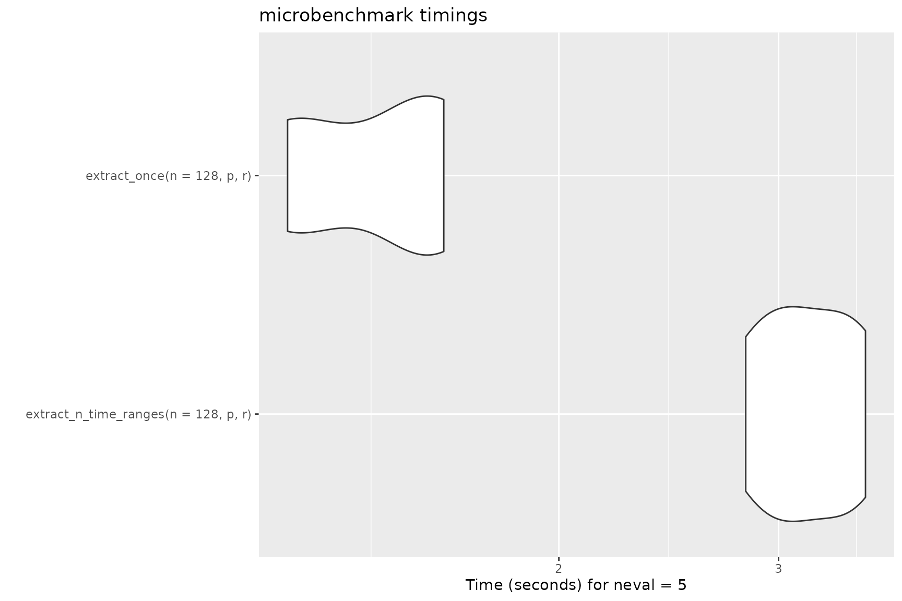
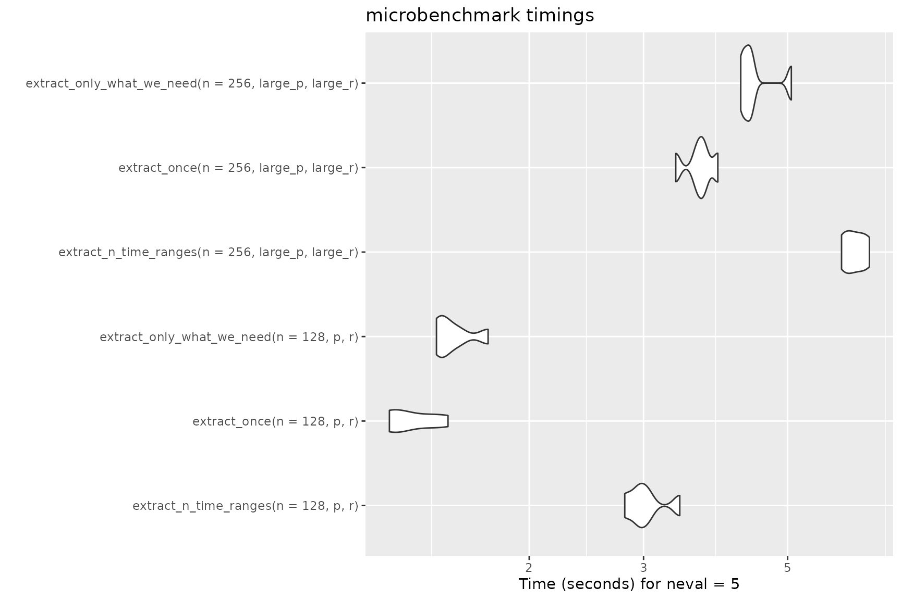
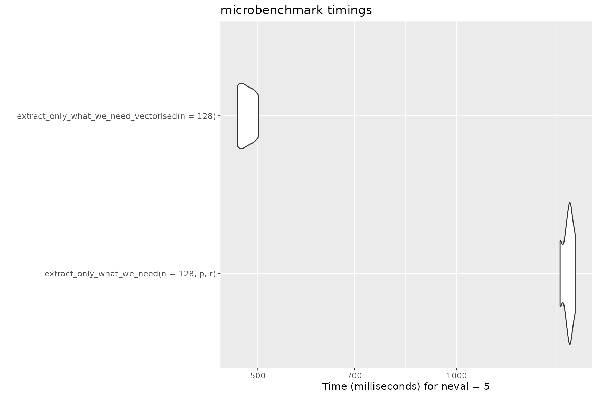
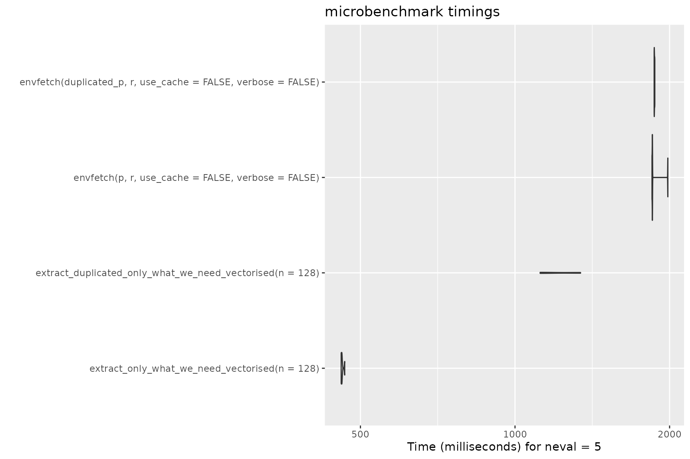

Comparison with other extraction methods
comparison.RmdThere are many existing R packages to extract raster data at locations of vector geometries (points, lines or polygons). However, when your vector geometries are combined with time (single datetimes or intervals), large raster files and many combinations of space and time to be extracted, the default strategies to use these packages are slow or use too much RAM (often causing crashes).
Envfetch uses sf , terra and
stars package in an optimal way for fast and
memory-efficient extraction of raster data over space and time. Each
optimisation has been implemented in the simple envfetch()
function, and this vignette functions as a reasoning for these
optimisations. For a guide on how to use envfetch()
optimisations automatically applied, see .
All below code examples use a mock dataset created with the following code:
library(envfetch)
library(ggplot2)
library(lubridate)
library(terra)
library(stars)
terraOptions(progress=0)
num_benchmark_repeats <- 5
tif = system.file("tif/L7_ETMs.tif", package = "stars")
dates <- seq(as.Date('2018-01-01'), as.Date('2018-09-21'), 'day')
r <- rast(tif)
r <- rep(r, 44)[[1:264]]
time(r) <- dates
p <- throw(
offset=c(288700, 9110700),
cellsize=10000/32,
n=32,
time_interval=interval(start='2018-01-01', end='2018-01-01'),
crs=st_crs(r)
)
num_intervals <- 128
interval_length <- nrow(p) / num_intervals
for (i in 1:num_intervals) {
start_idx <- ((i-1) * interval_length) + 1
end_idx <- i * interval_length
start_time <- as.Date("2018-01-01") + (i-1)
end_time <- start_time + 1
p$time_column[start_idx:end_idx] <- interval(start=start_time, end=end_time)
}
p$extracted <- NA
plot(r[[1]])
points(st_coordinates(p), pch = 19, col = "red")Extract once
The simplest approach to extract over space and time is to summarise
rasters temporally and then extract spatially within the locations of
your vector data. For one time range, existing solutions are well suited
to this task. Below is an example with the terra
package:
one_time_range <- p
one_time_range$time_column <- interval(start='2018-01-01', end='2018-01-02')
extract_one_time_range <- function() {
mean_r <- mean(r[[time(r) >= '2018-01-01' & time(r) <= '2018-01-02']])
return(extract(mean_r, one_time_range))
}
head(extract_one_time_range())
#> ID mean
#> 1 1 63.0
#> 2 2 66.5
#> 3 3 66.5
#> 4 4 70.0
#> 5 5 59.5
#> 6 6 64.5
microbenchmark::microbenchmark(
extract_one_time_range(),
times=num_benchmark_repeats
)
#> Unit: milliseconds
#> expr min lq mean median uq max
#> extract_one_time_range() 25.45823 25.7993 37.15441 25.93303 26.56069 82.0208
#> neval
#> 5Taking our first approach to multiple time ranges starts to give us problems. For this approach to scale, we need to repeat our extraction multiple times for each time range. This results in us requiring approximately twice the time for two time ranges, triple the time for three time ranges and so on.
extract_n_time_ranges <- function(n, p, r) {
unique_time_ranges <- unique(p$time_column)
unique_time_ranges <- unique_time_ranges[1:n]
# loop through each unique time range and extract
for(i in seq_len(length(unique_time_ranges))) {
t <- unique_time_ranges[i]
indx <- as.character(p$time_column) == as.character(t)
mean_r <- mean(r[[time(r) >= int_start(t) & time(r) <= int_end(t)]])
subset <- p[indx,]
p$extracted[indx] <- extract(mean_r, subset, ID=FALSE)$mean
}
return(p)
}
bm <- microbenchmark::microbenchmark(
extract_n_time_ranges(n = 1, p, r),
extract_n_time_ranges(n = 2, p, r),
extract_n_time_ranges(n = 4, p, r),
extract_n_time_ranges(n = 8, p, r),
extract_n_time_ranges(n = 16, p, r),
extract_n_time_ranges(n = 32, p, r),
extract_n_time_ranges(n = 64, p, r),
extract_n_time_ranges(n = 128, p, r),
times=num_benchmark_repeats
)
bm
#> Unit: milliseconds
#> expr min lq mean
#> extract_n_time_ranges(n = 1, p, r) 27.44140 31.62757 36.08675
#> extract_n_time_ranges(n = 2, p, r) 54.43676 59.86843 68.34834
#> extract_n_time_ranges(n = 4, p, r) 91.79607 97.80014 109.63029
#> extract_n_time_ranges(n = 8, p, r) 180.98658 181.40988 197.75527
#> extract_n_time_ranges(n = 16, p, r) 357.68348 361.21339 390.64894
#> extract_n_time_ranges(n = 32, p, r) 706.60187 713.34007 805.53002
#> extract_n_time_ranges(n = 64, p, r) 1418.96821 1425.39308 1561.40054
#> extract_n_time_ranges(n = 128, p, r) 2963.58808 2997.62796 3356.13717
#> median uq max neval
#> 33.20024 39.46661 48.69791 5
#> 62.88997 81.56425 82.98229 5
#> 109.76728 123.51309 125.27489 5
#> 183.35136 189.47982 253.54874 5
#> 361.44171 419.24629 453.65982 5
#> 769.75713 885.35870 952.59232 5
#> 1579.16911 1651.68968 1731.78260 5
#> 3255.74714 3748.75837 3814.96433 5
autoplot(bm)When your vector data has many time ranges, a faster solution is to instead do one single extraction for all time ranges and then summarise the data. This avoids repeating the expensive extraction operation.
extract_once <- function(n, p, r) {
# subset to only have the time columns we are interested in
time_column <- p$time_column
unique_time_ranges <- unique(time_column)
index <- time_column %in% unique_time_ranges[1:n]
p <- p[index,]
x <- sf::st_drop_geometry(p)
extracted <- extract(r, p, ID=FALSE)
times <- time(r)
return(
envfetch:::non_vectorised_summarisation(
x = x,
extracted = extracted,
IDs = 1:nrow(x),
temporal_fun = mean,
tms = times,
nms = names(extracted),
time_column_name = 'time_column',
new_col_names = c('L7_ETMs'),
multi_values_in_extraction_per_row = FALSE
)
)
}
extracted_multiple_times <- extract_n_time_ranges(n = 128, p, r)
extracted_once <- extract_once(n = 128, p, r)
identical(extracted_multiple_times$extracted, extracted_once$L7_ETMs)
#> [1] TRUE
bm <- microbenchmark::microbenchmark(
extract_n_time_ranges(n = 128, p, r),
extract_once(n = 128, p, r),
times=num_benchmark_repeats
)
bm
#> Unit: seconds
#> expr min lq mean median
#> extract_n_time_ranges(n = 128, p, r) 2.904303 3.085495 3.296403 3.250362
#> extract_once(n = 128, p, r) 1.234733 1.258795 1.484642 1.556721
#> uq max neval
#> 3.535701 3.706151 5
#> 1.675362 1.697599 5
autoplot(bm)
Only extract the time slices you are interested in
Although it’s faster to extract once, it may still be slow in cases where the raster stack is very large or times to extract are far from one another in the raster stack.
The solution is that we do not need to extract all time slices of the
data. A simple optimisation is to trim the time range of the raster
around the minimum and maximum of our vector data, e.g.
r[[times(r) > min_time & times(r) < min_time]].
This would help if the time ranges you wish to extract are close
together within a raster stack.
But to also optimise in other cases, especially when time ranges are
far from one another, we can only extract from the time slices we are
interested in. This is achievable by sub-setting the raster before the
extraction with only the relevant time slices (calculated by the
find_relevant_time_slices() function in
envfetch).
Note, time to calculate the relevant time slices can be more than you benefit from the reduced extraction if time ranges to extract are close to one another and the raster stack is small. We can see this in the below plot where extracting only what we need only has a benefit when extracting from a large raster with time slices far from one another.
large_p <- p
large_p$time_column <- interval(
int_start(large_p$time_column) + years(5),
int_end(large_p$time_column) + years(5)
)
large_p <- rbind(p, large_p)
dates <- seq(min(int_start(large_p$time_column)), max(int_end(large_p$time_column)), 'day')
large_r <- rast(tif)
large_r <- rep(large_r, 326)[[1:1955]]
time(large_r) <- dates
extract_only_what_we_need <- function(n, p, r) {
# subset to only have the time columns we are interested in
time_column <- p$time_column
unique_time_ranges <- unique(time_column)
index <- time_column %in% unique_time_ranges[1:n]
p <- p[index,]
x <- sf::st_drop_geometry(p)
relevant_time_slices <- envfetch:::find_relevant_time_slices(time(r), x$time_column)
r <- r[[relevant_time_slices]]
extracted <- extract(r, p, ID=FALSE)
times <- time(r)
return(
envfetch:::non_vectorised_summarisation(
x = x,
extracted = extracted,
IDs = 1:nrow(x),
temporal_fun = mean,
tms = times,
nms = names(extracted),
time_column_name = 'time_column',
new_col_names = c('L7_ETMs'),
multi_values_in_extraction_per_row = FALSE
)
)
}
extracted_only_what_we_need <- extract_only_what_we_need(n = 128, p, r)
identical(extracted_multiple_times$extracted, extracted_only_what_we_need$L7_ETMs)
#> [1] TRUE
bm <- microbenchmark::microbenchmark(
extract_n_time_ranges(n = 128, p, r),
extract_once(n = 128, p, r),
extract_only_what_we_need(n = 128, p, r),
extract_n_time_ranges(n = 256, large_p, large_r),
extract_once(n = 256, large_p, large_r),
extract_only_what_we_need(n = 256, large_p, large_r),
times=num_benchmark_repeats
)
bm
#> Unit: seconds
#> expr min lq
#> extract_n_time_ranges(n = 128, p, r) 2.915962 3.052463
#> extract_once(n = 128, p, r) 1.238042 1.242041
#> extract_only_what_we_need(n = 128, p, r) 1.490884 1.511225
#> extract_n_time_ranges(n = 256, large_p, large_r) 6.247511 6.319033
#> extract_once(n = 256, large_p, large_r) 3.463964 3.655003
#> extract_only_what_we_need(n = 256, large_p, large_r) 4.325404 4.478563
#> mean median uq max neval
#> 3.261666 3.338140 3.413433 3.588334 5
#> 1.296904 1.255624 1.292521 1.456295 5
#> 1.613402 1.628754 1.693775 1.742370 5
#> 6.327814 6.326538 6.370509 6.375479 5
#> 3.664313 3.666039 3.692901 3.843657 5
#> 4.674067 4.485122 4.872006 5.209237 5
autoplot(bm)
For cases where you intend to extract single time slices not time
ranges for each geometry, we have also implemented a wrapper around the
approach used by stars in their st_extract
function. This uses a similar approach by only extracting the time
slices needed.
Vectorise summarisation functions
Another optimisation is in the summarisation step. R is slow at
running tasks repeatedly (e.g. row by row). Offsetting that task to a
faster programming language under the hood is possible with vectorised
functions. Functions like rowMeans() and
rowSums() are written in C instead of R. As a result, they
don’t require as much overhead (of the R interpreter), giving us further
performance gains.
extract_only_what_we_need_vectorised <- function(n) {
# subset to only have the time columns we are interested in
time_column <- p$time_column
unique_time_ranges <- unique(time_column)
index <- time_column %in% unique_time_ranges[1:n]
p <- p[index,]
x <- sf::st_drop_geometry(p)
relevant_time_slices <- envfetch:::find_relevant_time_slices(time(r), x$time_column)
r <- r[[relevant_time_slices]]
extracted <- extract(r, p, ID=FALSE)
times <- time(r)
return(
envfetch:::vectorised_summarisation(
x = x,
extracted = extracted,
temporal_fun = rowMeans,
tms = times,
nms = names(extracted),
time_column_name = 'time_column',
new_col_names = c('L7_ETMs')
)
)
}
extracted_only_what_we_need_vectorised <- extract_only_what_we_need_vectorised(n = 128)
identical(extracted_only_what_we_need$L7_ETMs, extracted_only_what_we_need_vectorised$L7_ETMs)
#> [1] TRUE
bm <- microbenchmark::microbenchmark(
extract_only_what_we_need(n = 128, p, r),
extract_only_what_we_need_vectorised(n = 128),
times=num_benchmark_repeats
)
bm
#> Unit: milliseconds
#> expr min lq mean
#> extract_only_what_we_need(n = 128, p, r) 1458.9340 1467.7678 1483.0301
#> extract_only_what_we_need_vectorised(n = 128) 470.8823 472.1714 483.4074
#> median uq max neval
#> 1482.0416 1499.382 1507.025 5
#> 487.6604 488.694 497.629 5
autoplot(bm)
Don’t repeat yourself
Finally, using existing packages with repeated data results in repeated extractions. That is, if you provide extraction functions with the same data point multiple times, it will extract that point multiple times.
duplicated_p <- p[rep(seq_len(nrow(p)), each = 20),]
extract_duplicated_only_what_we_need_vectorised <- function(n) {
# subset to only have the time columns we are interested in
time_column <- duplicated_p$time_column
unique_time_ranges <- unique(time_column)
index <- time_column %in% unique_time_ranges[1:n]
duplicated_p <- duplicated_p[index,]
x <- sf::st_drop_geometry(duplicated_p)
relevant_time_slices <- envfetch:::find_relevant_time_slices(time(r), x$time_column)
r <- r[[relevant_time_slices]]
extracted <- extract(r, duplicated_p, ID=FALSE)
times <- time(r)
return(
envfetch:::vectorised_summarisation(
x = x,
extracted = extracted,
temporal_fun = rowMeans,
tms = times,
nms = names(extracted),
time_column_name = 'time_column',
new_col_names = c('L7_ETMs')
)
)
}
repeated_extraction_without_duplicates <- extract_only_what_we_need_vectorised(n = 128)
repeated_extraction_with_duplicates <- extract_duplicated_only_what_we_need_vectorised(n = 128)
non_repeated_extraction_without_duplicates <- envfetch(p, r, use_cache=FALSE, verbose=FALSE)
non_repeated_extraction_with_duplicates <- envfetch(duplicated_p, r, use_cache=FALSE, verbose=FALSE)
identical(repeated_extraction_with_duplicates$L7_ETMs, non_repeated_extraction_with_duplicates$L7_ETMs)
#> [1] TRUE
bm <- microbenchmark::microbenchmark(
extract_only_what_we_need_vectorised(n = 128),
extract_duplicated_only_what_we_need_vectorised(n = 128),
envfetch(p, r, use_cache=FALSE, verbose=FALSE),
envfetch(duplicated_p, r, use_cache=FALSE, verbose=FALSE),
times=num_benchmark_repeats
)
bm
#> Unit: milliseconds
#> expr min
#> extract_only_what_we_need_vectorised(n = 128) 461.8787
#> extract_duplicated_only_what_we_need_vectorised(n = 128) 1138.8091
#> envfetch(p, r, use_cache = FALSE, verbose = FALSE) 1933.9714
#> envfetch(duplicated_p, r, use_cache = FALSE, verbose = FALSE) 1954.1011
#> lq mean median uq max neval
#> 461.9401 466.8124 466.5142 471.5651 472.164 5
#> 1140.4238 1198.5104 1154.9586 1172.6416 1385.719 5
#> 1936.0873 1936.3364 1936.1135 1937.2932 1938.216 5
#> 1957.7536 2011.8230 1958.9421 1967.6205 2220.698 5
autoplot(bm)
Similarly, if you have already extracted the data once, why extract
it again? Saving data after an extraction and reloading it when needed
is convenient and saves time, especially if an extraction pipeline fails
or crashes part of the way through or if you want to use the data
between R sessions. For convenience, storing data for future requests
(caching) is done automatically by envfetch().
> 15x speed improvement
The above optimisations result in the speed benefits found in the
envfetch function.
bm <- microbenchmark::microbenchmark(
extract_n_time_ranges(n = 128, p, r),
envfetch(p, r, use_cache = FALSE, verbose = FALSE),
times=num_benchmark_repeats
)
#> |---------|---------|---------|---------|========================================= |---------|---------|---------|---------|========================================= |---------|---------|---------|---------|========================================= |---------|---------|---------|---------|========================================= |---------|---------|---------|---------|========================================= |---------|---------|---------|---------|========================================= |---------|---------|---------|---------|========================================= |---------|---------|---------|---------|========================================= |---------|---------|---------|---------|========================================= |---------|---------|---------|---------|========================================= |---------|---------|---------|---------|========================================= |---------|---------|---------|---------|========================================= |---------|---------|---------|---------|========================================= |---------|---------|---------|---------|========================================= |---------|---------|---------|---------|========================================= |---------|---------|---------|---------|========================================= |---------|---------|---------|---------|========================================= |---------|---------|---------|---------|========================================= |---------|---------|---------|---------|========================================= |---------|---------|---------|---------|========================================= |---------|---------|---------|---------|========================================= |---------|---------|---------|---------|========================================= |---------|---------|---------|---------|========================================= |---------|---------|---------|---------|========================================= |---------|---------|---------|---------|========================================= |---------|---------|---------|---------|========================================= |---------|---------|---------|---------|========================================= |---------|---------|---------|---------|========================================= |---------|---------|---------|---------|========================================= |---------|---------|---------|---------|========================================= |---------|---------|---------|---------|========================================= |---------|---------|---------|---------|========================================= |---------|---------|---------|---------|========================================= |---------|---------|---------|---------|========================================= |---------|---------|---------|---------|========================================= |---------|---------|---------|---------|========================================= |---------|---------|---------|---------|========================================= |---------|---------|---------|---------|========================================= |---------|---------|---------|---------|========================================= |---------|---------|---------|---------|========================================= |---------|---------|---------|---------|========================================= |---------|---------|---------|---------|========================================= |---------|---------|---------|---------|========================================= |---------|---------|---------|---------|========================================= |---------|---------|---------|---------|========================================= |---------|---------|---------|---------|========================================= |---------|---------|---------|---------|========================================= |---------|---------|---------|---------|========================================= |---------|---------|---------|---------|========================================= |---------|---------|---------|---------|========================================= |---------|---------|---------|---------|========================================= |---------|---------|---------|---------|========================================= |---------|---------|---------|---------|========================================= |---------|---------|---------|---------|========================================= |---------|---------|---------|---------|========================================= |---------|---------|---------|---------|========================================= |---------|---------|---------|---------|========================================= |---------|---------|---------|---------|========================================= |---------|---------|---------|---------|========================================= |---------|---------|---------|---------|========================================= |---------|---------|---------|---------|========================================= |---------|---------|---------|---------|========================================= |---------|---------|---------|---------|========================================= |---------|---------|---------|---------|========================================= |---------|---------|---------|---------|========================================= |---------|---------|---------|---------|========================================= |---------|---------|---------|---------|========================================= |---------|---------|---------|---------|========================================= |---------|---------|---------|---------|========================================= |---------|---------|---------|---------|========================================= |---------|---------|---------|---------|========================================= |---------|---------|---------|---------|========================================= |---------|---------|---------|---------|========================================= |---------|---------|---------|---------|========================================= |---------|---------|---------|---------|========================================= |---------|---------|---------|---------|========================================= |---------|---------|---------|---------|========================================= |---------|---------|---------|---------|========================================= |---------|---------|---------|---------|========================================= |---------|---------|---------|---------|========================================= |---------|---------|---------|---------|========================================= |---------|---------|---------|---------|========================================= |---------|---------|---------|---------|========================================= |---------|---------|---------|---------|========================================= |---------|---------|---------|---------|========================================= |---------|---------|---------|---------|========================================= |---------|---------|---------|---------|========================================= |---------|---------|---------|---------|========================================= |---------|---------|---------|---------|========================================= |---------|---------|---------|---------|========================================= |---------|---------|---------|---------|========================================= |---------|---------|---------|---------|========================================= |---------|---------|---------|---------|========================================= |---------|---------|---------|---------|========================================= |---------|---------|---------|---------|========================================= |---------|---------|---------|---------|========================================= |---------|---------|---------|---------|========================================= |---------|---------|---------|---------|========================================= |---------|---------|---------|---------|========================================= |---------|---------|---------|---------|========================================= |---------|---------|---------|---------|========================================= |---------|---------|---------|---------|========================================= |---------|---------|---------|---------|========================================= |---------|---------|---------|---------|========================================= |---------|---------|---------|---------|========================================= |---------|---------|---------|---------|========================================= |---------|---------|---------|---------|========================================= |---------|---------|---------|---------|========================================= |---------|---------|---------|---------|========================================= |---------|---------|---------|---------|========================================= |---------|---------|---------|---------|========================================= |---------|---------|---------|---------|========================================= |---------|---------|---------|---------|========================================= |---------|---------|---------|---------|========================================= |---------|---------|---------|---------|========================================= |---------|---------|---------|---------|========================================= |---------|---------|---------|---------|========================================= |---------|---------|---------|---------|========================================= |---------|---------|---------|---------|========================================= |---------|---------|---------|---------|========================================= |---------|---------|---------|---------|========================================= |---------|---------|---------|---------|========================================= |---------|---------|---------|---------|========================================= |---------|---------|---------|---------|========================================= |---------|---------|---------|---------|========================================= |---------|---------|---------|---------|========================================= |---------|---------|---------|---------|========================================= |---------|---------|---------|---------|========================================= |---------|---------|---------|---------|========================================= |---------|---------|---------|---------|========================================= |---------|---------|---------|---------|========================================= |---------|---------|---------|---------|========================================= |---------|---------|---------|---------|========================================= |---------|---------|---------|---------|========================================= |---------|---------|---------|---------|========================================= |---------|---------|---------|---------|========================================= |---------|---------|---------|---------|========================================= |---------|---------|---------|---------|========================================= |---------|---------|---------|---------|========================================= |---------|---------|---------|---------|========================================= |---------|---------|---------|---------|========================================= |---------|---------|---------|---------|========================================= |---------|---------|---------|---------|========================================= |---------|---------|---------|---------|========================================= |---------|---------|---------|---------|========================================= |---------|---------|---------|---------|========================================= |---------|---------|---------|---------|========================================= |---------|---------|---------|---------|========================================= |---------|---------|---------|---------|========================================= |---------|---------|---------|---------|========================================= |---------|---------|---------|---------|========================================= |---------|---------|---------|---------|========================================= |---------|---------|---------|---------|========================================= |---------|---------|---------|---------|========================================= |---------|---------|---------|---------|========================================= |---------|---------|---------|---------|========================================= |---------|---------|---------|---------|========================================= |---------|---------|---------|---------|========================================= |---------|---------|---------|---------|========================================= |---------|---------|---------|---------|========================================= |---------|---------|---------|---------|========================================= |---------|---------|---------|---------|========================================= |---------|---------|---------|---------|========================================= |---------|---------|---------|---------|========================================= |---------|---------|---------|---------|========================================= |---------|---------|---------|---------|========================================= |---------|---------|---------|---------|========================================= |---------|---------|---------|---------|========================================= |---------|---------|---------|---------|========================================= |---------|---------|---------|---------|========================================= |---------|---------|---------|---------|========================================= |---------|---------|---------|---------|========================================= |---------|---------|---------|---------|========================================= |---------|---------|---------|---------|========================================= |---------|---------|---------|---------|========================================= |---------|---------|---------|---------|========================================= |---------|---------|---------|---------|========================================= |---------|---------|---------|---------|========================================= |---------|---------|---------|---------|========================================= |---------|---------|---------|---------|========================================= |---------|---------|---------|---------|========================================= |---------|---------|---------|---------|========================================= |---------|---------|---------|---------|========================================= |---------|---------|---------|---------|========================================= |---------|---------|---------|---------|========================================= |---------|---------|---------|---------|========================================= |---------|---------|---------|---------|========================================= |---------|---------|---------|---------|========================================= |---------|---------|---------|---------|========================================= |---------|---------|---------|---------|========================================= |---------|---------|---------|---------|========================================= |---------|---------|---------|---------|========================================= |---------|---------|---------|---------|========================================= |---------|---------|---------|---------|========================================= |---------|---------|---------|---------|========================================= |---------|---------|---------|---------|========================================= |---------|---------|---------|---------|========================================= |---------|---------|---------|---------|========================================= |---------|---------|---------|---------|========================================= |---------|---------|---------|---------|========================================= |---------|---------|---------|---------|========================================= |---------|---------|---------|---------|========================================= |---------|---------|---------|---------|========================================= |---------|---------|---------|---------|========================================= |---------|---------|---------|---------|========================================= |---------|---------|---------|---------|========================================= |---------|---------|---------|---------|========================================= |---------|---------|---------|---------|========================================= |---------|---------|---------|---------|========================================= |---------|---------|---------|---------|========================================= |---------|---------|---------|---------|========================================= |---------|---------|---------|---------|========================================= |---------|---------|---------|---------|========================================= |---------|---------|---------|---------|========================================= |---------|---------|---------|---------|========================================= |---------|---------|---------|---------|========================================= |---------|---------|---------|---------|========================================= |---------|---------|---------|---------|========================================= |---------|---------|---------|---------|========================================= |---------|---------|---------|---------|========================================= |---------|---------|---------|---------|========================================= |---------|---------|---------|---------|========================================= |---------|---------|---------|---------|========================================= |---------|---------|---------|---------|========================================= |---------|---------|---------|---------|========================================= |---------|---------|---------|---------|========================================= |---------|---------|---------|---------|========================================= |---------|---------|---------|---------|========================================= |---------|---------|---------|---------|========================================= |---------|---------|---------|---------|========================================= |---------|---------|---------|---------|========================================= |---------|---------|---------|---------|========================================= |---------|---------|---------|---------|========================================= |---------|---------|---------|---------|========================================= |---------|---------|---------|---------|========================================= |---------|---------|---------|---------|========================================= |---------|---------|---------|---------|========================================= |---------|---------|---------|---------|========================================= |---------|---------|---------|---------|========================================= |---------|---------|---------|---------|========================================= |---------|---------|---------|---------|========================================= |---------|---------|---------|---------|========================================= |---------|---------|---------|---------|========================================= |---------|---------|---------|---------|========================================= |---------|---------|---------|---------|========================================= |---------|---------|---------|---------|========================================= |---------|---------|---------|---------|========================================= |---------|---------|---------|---------|========================================= |---------|---------|---------|---------|========================================= |---------|---------|---------|---------|========================================= |---------|---------|---------|---------|========================================= |---------|---------|---------|---------|========================================= |---------|---------|---------|---------|========================================= |---------|---------|---------|---------|========================================= |---------|---------|---------|---------|========================================= |---------|---------|---------|---------|========================================= |---------|---------|---------|---------|========================================= |---------|---------|---------|---------|========================================= |---------|---------|---------|---------|========================================= |---------|---------|---------|---------|========================================= |---------|---------|---------|---------|========================================= |---------|---------|---------|---------|========================================= |---------|---------|---------|---------|========================================= |---------|---------|---------|---------|========================================= |---------|---------|---------|---------|========================================= |---------|---------|---------|---------|========================================= |---------|---------|---------|---------|========================================= |---------|---------|---------|---------|========================================= |---------|---------|---------|---------|========================================= |---------|---------|---------|---------|========================================= |---------|---------|---------|---------|========================================= |---------|---------|---------|---------|========================================= |---------|---------|---------|---------|========================================= |---------|---------|---------|---------|========================================= |---------|---------|---------|---------|========================================= |---------|---------|---------|---------|========================================= |---------|---------|---------|---------|========================================= |---------|---------|---------|---------|========================================= |---------|---------|---------|---------|========================================= |---------|---------|---------|---------|========================================= |---------|---------|---------|---------|========================================= |---------|---------|---------|---------|========================================= |---------|---------|---------|---------|========================================= |---------|---------|---------|---------|========================================= |---------|---------|---------|---------|========================================= |---------|---------|---------|---------|========================================= |---------|---------|---------|---------|========================================= |---------|---------|---------|---------|========================================= |---------|---------|---------|---------|========================================= |---------|---------|---------|---------|========================================= |---------|---------|---------|---------|========================================= |---------|---------|---------|---------|========================================= |---------|---------|---------|---------|========================================= |---------|---------|---------|---------|========================================= |---------|---------|---------|---------|========================================= |---------|---------|---------|---------|========================================= |---------|---------|---------|---------|========================================= |---------|---------|---------|---------|========================================= |---------|---------|---------|---------|========================================= |---------|---------|---------|---------|========================================= |---------|---------|---------|---------|========================================= |---------|---------|---------|---------|========================================= |---------|---------|---------|---------|========================================= |---------|---------|---------|---------|========================================= |---------|---------|---------|---------|========================================= |---------|---------|---------|---------|========================================= |---------|---------|---------|---------|========================================= |---------|---------|---------|---------|========================================= |---------|---------|---------|---------|========================================= |---------|---------|---------|---------|========================================= |---------|---------|---------|---------|========================================= |---------|---------|---------|---------|========================================= |---------|---------|---------|---------|========================================= |---------|---------|---------|---------|========================================= |---------|---------|---------|---------|========================================= |---------|---------|---------|---------|========================================= |---------|---------|---------|---------|========================================= |---------|---------|---------|---------|========================================= |---------|---------|---------|---------|========================================= |---------|---------|---------|---------|========================================= |---------|---------|---------|---------|========================================= |---------|---------|---------|---------|========================================= |---------|---------|---------|---------|========================================= |---------|---------|---------|---------|========================================= |---------|---------|---------|---------|========================================= |---------|---------|---------|---------|========================================= |---------|---------|---------|---------|========================================= |---------|---------|---------|---------|========================================= |---------|---------|---------|---------|========================================= |---------|---------|---------|---------|========================================= |---------|---------|---------|---------|========================================= |---------|---------|---------|---------|========================================= |---------|---------|---------|---------|========================================= |---------|---------|---------|---------|========================================= |---------|---------|---------|---------|========================================= |---------|---------|---------|---------|========================================= |---------|---------|---------|---------|========================================= |---------|---------|---------|---------|========================================= |---------|---------|---------|---------|========================================= |---------|---------|---------|---------|========================================= |---------|---------|---------|---------|========================================= |---------|---------|---------|---------|========================================= |---------|---------|---------|---------|========================================= |---------|---------|---------|---------|========================================= |---------|---------|---------|---------|========================================= |---------|---------|---------|---------|========================================= |---------|---------|---------|---------|========================================= |---------|---------|---------|---------|========================================= |---------|---------|---------|---------|========================================= |---------|---------|---------|---------|========================================= |---------|---------|---------|---------|========================================= |---------|---------|---------|---------|========================================= |---------|---------|---------|---------|========================================= |---------|---------|---------|---------|========================================= |---------|---------|---------|---------|========================================= |---------|---------|---------|---------|========================================= |---------|---------|---------|---------|========================================= |---------|---------|---------|---------|========================================= |---------|---------|---------|---------|========================================= |---------|---------|---------|---------|========================================= |---------|---------|---------|---------|========================================= |---------|---------|---------|---------|========================================= |---------|---------|---------|---------|========================================= |---------|---------|---------|---------|========================================= |---------|---------|---------|---------|========================================= |---------|---------|---------|---------|========================================= |---------|---------|---------|---------|========================================= |---------|---------|---------|---------|========================================= |---------|---------|---------|---------|========================================= |---------|---------|---------|---------|========================================= |---------|---------|---------|---------|========================================= |---------|---------|---------|---------|========================================= |---------|---------|---------|---------|========================================= |---------|---------|---------|---------|========================================= |---------|---------|---------|---------|========================================= |---------|---------|---------|---------|========================================= |---------|---------|---------|---------|========================================= |---------|---------|---------|---------|========================================= |---------|---------|---------|---------|========================================= |---------|---------|---------|---------|========================================= |---------|---------|---------|---------|========================================= |---------|---------|---------|---------|========================================= |---------|---------|---------|---------|========================================= |---------|---------|---------|---------|========================================= |---------|---------|---------|---------|========================================= |---------|---------|---------|---------|========================================= |---------|---------|---------|---------|========================================= |---------|---------|---------|---------|========================================= |---------|---------|---------|---------|========================================= |---------|---------|---------|---------|========================================= |---------|---------|---------|---------|========================================= |---------|---------|---------|---------|========================================= |---------|---------|---------|---------|========================================= |---------|---------|---------|---------|========================================= |---------|---------|---------|---------|========================================= |---------|---------|---------|---------|========================================= |---------|---------|---------|---------|========================================= |---------|---------|---------|---------|========================================= |---------|---------|---------|---------|========================================= |---------|---------|---------|---------|========================================= |---------|---------|---------|---------|========================================= |---------|---------|---------|---------|========================================= |---------|---------|---------|---------|========================================= |---------|---------|---------|---------|========================================= |---------|---------|---------|---------|========================================= |---------|---------|---------|---------|========================================= |---------|---------|---------|---------|========================================= |---------|---------|---------|---------|========================================= |---------|---------|---------|---------|========================================= |---------|---------|---------|---------|========================================= |---------|---------|---------|---------|========================================= |---------|---------|---------|---------|========================================= |---------|---------|---------|---------|========================================= |---------|---------|---------|---------|========================================= |---------|---------|---------|---------|========================================= |---------|---------|---------|---------|========================================= |---------|---------|---------|---------|========================================= |---------|---------|---------|---------|========================================= |---------|---------|---------|---------|========================================= |---------|---------|---------|---------|========================================= |---------|---------|---------|---------|========================================= |---------|---------|---------|---------|========================================= |---------|---------|---------|---------|========================================= |---------|---------|---------|---------|========================================= |---------|---------|---------|---------|========================================= |---------|---------|---------|---------|========================================= |---------|---------|---------|---------|========================================= |---------|---------|---------|---------|========================================= |---------|---------|---------|---------|========================================= |---------|---------|---------|---------|========================================= |---------|---------|---------|---------|========================================= |---------|---------|---------|---------|========================================= |---------|---------|---------|---------|========================================= |---------|---------|---------|---------|========================================= |---------|---------|---------|---------|========================================= |---------|---------|---------|---------|========================================= |---------|---------|---------|---------|========================================= |---------|---------|---------|---------|========================================= |---------|---------|---------|---------|========================================= |---------|---------|---------|---------|========================================= |---------|---------|---------|---------|========================================= |---------|---------|---------|---------|========================================= |---------|---------|---------|---------|========================================= |---------|---------|---------|---------|========================================= |---------|---------|---------|---------|========================================= |---------|---------|---------|---------|========================================= |---------|---------|---------|---------|========================================= |---------|---------|---------|---------|========================================= |---------|---------|---------|---------|========================================= |---------|---------|---------|---------|========================================= |---------|---------|---------|---------|========================================= |---------|---------|---------|---------|========================================= |---------|---------|---------|---------|========================================= |---------|---------|---------|---------|========================================= |---------|---------|---------|---------|========================================= |---------|---------|---------|---------|========================================= |---------|---------|---------|---------|========================================= |---------|---------|---------|---------|========================================= |---------|---------|---------|---------|========================================= |---------|---------|---------|---------|========================================= |---------|---------|---------|---------|========================================= |---------|---------|---------|---------|========================================= |---------|---------|---------|---------|========================================= |---------|---------|---------|---------|========================================= |---------|---------|---------|---------|========================================= |---------|---------|---------|---------|========================================= |---------|---------|---------|---------|========================================= |---------|---------|---------|---------|========================================= |---------|---------|---------|---------|========================================= |---------|---------|---------|---------|========================================= |---------|---------|---------|---------|========================================= |---------|---------|---------|---------|========================================= |---------|---------|---------|---------|========================================= |---------|---------|---------|---------|========================================= |---------|---------|---------|---------|========================================= |---------|---------|---------|---------|========================================= |---------|---------|---------|---------|========================================= |---------|---------|---------|---------|========================================= |---------|---------|---------|---------|========================================= |---------|---------|---------|---------|========================================= |---------|---------|---------|---------|========================================= |---------|---------|---------|---------|========================================= |---------|---------|---------|---------|========================================= |---------|---------|---------|---------|========================================= |---------|---------|---------|---------|========================================= |---------|---------|---------|---------|========================================= |---------|---------|---------|---------|========================================= |---------|---------|---------|---------|========================================= |---------|---------|---------|---------|========================================= |---------|---------|---------|---------|========================================= |---------|---------|---------|---------|========================================= |---------|---------|---------|---------|========================================= |---------|---------|---------|---------|========================================= |---------|---------|---------|---------|========================================= |---------|---------|---------|---------|========================================= |---------|---------|---------|---------|========================================= |---------|---------|---------|---------|========================================= |---------|---------|---------|---------|========================================= |---------|---------|---------|---------|========================================= |---------|---------|---------|---------|========================================= |---------|---------|---------|---------|========================================= |---------|---------|---------|---------|========================================= |---------|---------|---------|---------|========================================= |---------|---------|---------|---------|========================================= |---------|---------|---------|---------|========================================= |---------|---------|---------|---------|========================================= |---------|---------|---------|---------|========================================= |---------|---------|---------|---------|========================================= |---------|---------|---------|---------|========================================= |---------|---------|---------|---------|========================================= |---------|---------|---------|---------|========================================= |---------|---------|---------|---------|========================================= |---------|---------|---------|---------|========================================= |---------|---------|---------|---------|========================================= |---------|---------|---------|---------|========================================= |---------|---------|---------|---------|========================================= |---------|---------|---------|---------|========================================= |---------|---------|---------|---------|========================================= |---------|---------|---------|---------|========================================= |---------|---------|---------|---------|========================================= |---------|---------|---------|---------|========================================= |---------|---------|---------|---------|========================================= |---------|---------|---------|---------|========================================= |---------|---------|---------|---------|========================================= |---------|---------|---------|---------|========================================= |---------|---------|---------|---------|========================================= |---------|---------|---------|---------|========================================= |---------|---------|---------|---------|========================================= |---------|---------|---------|---------|========================================= |---------|---------|---------|---------|========================================= |---------|---------|---------|---------|========================================= |---------|---------|---------|---------|========================================= |---------|---------|---------|---------|========================================= |---------|---------|---------|---------|========================================= |---------|---------|---------|---------|========================================= |---------|---------|---------|---------|========================================= |---------|---------|---------|---------|========================================= |---------|---------|---------|---------|========================================= |---------|---------|---------|---------|========================================= |---------|---------|---------|---------|========================================= |---------|---------|---------|---------|========================================= |---------|---------|---------|---------|========================================= |---------|---------|---------|---------|========================================= |---------|---------|---------|---------|========================================= |---------|---------|---------|---------|========================================= |---------|---------|---------|---------|========================================= |---------|---------|---------|---------|========================================= |---------|---------|---------|---------|========================================= |---------|---------|---------|---------|========================================= |---------|---------|---------|---------|========================================= |---------|---------|---------|---------|========================================= |---------|---------|---------|---------|========================================= |---------|---------|---------|---------|========================================= |---------|---------|---------|---------|========================================= |---------|---------|---------|---------|========================================= |---------|---------|---------|---------|========================================= |---------|---------|---------|---------|========================================= |---------|---------|---------|---------|========================================= |---------|---------|---------|---------|========================================= |---------|---------|---------|---------|========================================= |---------|---------|---------|---------|========================================= |---------|---------|---------|---------|========================================= |---------|---------|---------|---------|========================================= |---------|---------|---------|---------|========================================= |---------|---------|---------|---------|========================================= |---------|---------|---------|---------|========================================= |---------|---------|---------|---------|========================================= |---------|---------|---------|---------|========================================= |---------|---------|---------|---------|========================================= |---------|---------|---------|---------|========================================= |---------|---------|---------|---------|========================================= |---------|---------|---------|---------|========================================= |---------|---------|---------|---------|========================================= |---------|---------|---------|---------|========================================= |---------|---------|---------|---------|========================================= |---------|---------|---------|---------|========================================= |---------|---------|---------|---------|========================================= |---------|---------|---------|---------|========================================= |---------|---------|---------|---------|========================================= |---------|---------|---------|---------|========================================= |---------|---------|---------|---------|========================================= |---------|---------|---------|---------|========================================= |---------|---------|---------|---------|========================================= |---------|---------|---------|---------|========================================= |---------|---------|---------|---------|========================================= |---------|---------|---------|---------|========================================= |---------|---------|---------|---------|========================================= |---------|---------|---------|---------|========================================= |---------|---------|---------|---------|========================================= |---------|---------|---------|---------|========================================= |---------|---------|---------|---------|========================================= |---------|---------|---------|---------|========================================= |---------|---------|---------|---------|========================================= |---------|---------|---------|---------|========================================= |---------|---------|---------|---------|========================================= |---------|---------|---------|---------|========================================= |---------|---------|---------|---------|========================================= |---------|---------|---------|---------|========================================= |---------|---------|---------|---------|========================================= |---------|---------|---------|---------|========================================= |---------|---------|---------|---------|========================================= |---------|---------|---------|---------|========================================= |---------|---------|---------|---------|========================================= |---------|---------|---------|---------|========================================= |---------|---------|---------|---------|========================================= |---------|---------|---------|---------|========================================= |---------|---------|---------|---------|========================================= |---------|---------|---------|---------|========================================= |---------|---------|---------|---------|========================================= |---------|---------|---------|---------|========================================= |---------|---------|---------|---------|========================================= |---------|---------|---------|---------|========================================= |---------|---------|---------|---------|========================================= |---------|---------|---------|---------|========================================= |---------|---------|---------|---------|========================================= |---------|---------|---------|---------|========================================= |---------|---------|---------|---------|========================================= |---------|---------|---------|---------|========================================= |---------|---------|---------|---------|========================================= |---------|---------|---------|---------|========================================= |---------|---------|---------|---------|========================================= |---------|---------|---------|---------|========================================= |---------|---------|---------|---------|========================================= |---------|---------|---------|---------|========================================= |---------|---------|---------|---------|========================================= |---------|---------|---------|---------|========================================= |---------|---------|---------|---------|========================================= |---------|---------|---------|---------|========================================= |---------|---------|---------|---------|========================================= |---------|---------|---------|---------|========================================= |---------|---------|---------|---------|========================================= |---------|---------|---------|---------|========================================= |---------|---------|---------|---------|========================================= |---------|---------|---------|---------|========================================= |---------|---------|---------|---------|========================================= |---------|---------|---------|---------|========================================= |---------|---------|---------|---------|========================================= |---------|---------|---------|---------|========================================= |---------|---------|---------|---------|========================================= |---------|---------|---------|---------|=========================================
bm
#> Unit: seconds
#> expr min lq mean
#> extract_n_time_ranges(n = 128, p, r) 2.824019 2.861804 2.925474
#> envfetch(p, r, use_cache = FALSE, verbose = FALSE) 1.925748 1.933606 1.946099
#> median uq max neval
#> 2.905737 2.915974 3.119837 5
#> 1.934837 1.937643 1.998660 5
autoplot(bm)Going from the most naive extraction solution with our small example
(128 time intervals), we have changed our extraction time from 15
seconds to 1 second. That is a speed up of 15x. Note, these benefits get
larger both with the number of time intervals that need to be extracted
and how far in time time intervals are from one another in the raster
file. Extraction tasks that would otherwise take multiple days can be
achievable in minutes or hours with envfetch.
To ensure this extraction process is possible on lower-end machines, there are further strategies to optimise RAM usage described below.
Don’t overuse RAM
In an ideal world, it would be best to extract all the data necessary for the extraction at once. However, the amount of data a computer can extract at once is limited by how much RAM it has.
To allow computers with less RAM to complete the same extraction
task, we can separate extractions into smaller chunks. These can then be
processed one at a time, limiting RAM usage within the available limits.
We have implemented an automatic system to extract data in chunks in the
extract_over_space function, used internally by
envfetch().
Remember, all these optimisations are built into the
envfetch() function so you don’t need to repeat this when
extracting your dataset.
Run on google cloud
In cases where downloading of local files for extracting data are not possible or practical, cloud solutions can provide a performant alternative. The largest and most commonly used cloud-based geospatial analysis platform is Google Earth Engine.
Currently, there is one R package with an implemented extraction
function for Google earth engine, rgee. However, with large
datasets or extraction tasks, standard use of the
rgee::ee_extract function can causes crashes or overuse of
Google Earth Engine’s memory limits, failing the extraction task.
We have implemented processing data in chunks with the
extract_gee function, used internally by
envfetch(), to allow processing of more data, while
remaining within your quota limits (https://developers.google.com/earth-engine/guides/usage#adjustable_quota_limits).
Using ee_extract from rgee will by default
fail with this dataset.
rgee::ee_Initialize()
# first half of extraction process (extracting between all time ranges)
p_feature <- rgee::sf_as_ee(sf::st_geometry(large_p))
ic <- rgee::ee$ImageCollection('MODIS/061/MOD13Q1')$
filterBounds(p_feature)$
filterDate(
as.character(as_date(min(int_start(p$time_column)))),
as.character(as_date(max(int_end(p$time_column))))
)
rgee_extracted <- rgee::ee_extract(
x = ic,
y = p_feature,
scale = 250,
fun = rgee::ee$Reducer$mean(),
lazy = FALSE,
sf = TRUE,
)
#> Error in py_call_impl(callable, call_args$unnamed, call_args$named) :
#> ee.ee_exception.EEException: User memory limit exceeded.
#> Run `reticulate::py_last_error()` for details.
# ... you would then also need to make a custom solution to summarise this dataenvfetch will process this same task in chunks to ensure
it does not fail. It will also summarise the data for you.
envfetch_extracted <- envfetch(large_p, 'MODIS/061/MOD13Q1')
#> ── rgee 1.1.5 ───────────────────────────────────────────────────────────────────────────────────────── earthengine-api 0.1.374 ──
#> ✔ user: not_defined
#> ✔ Initializing Google Earth Engine: DONE!
#> ✔ Earth Engine account: users/dungbeetlelab
#> ──────────────────────────────────────────────────────────────────────────────────────────────────────────────────────────────────
#>
#> ── 🥏 🐕 Fetching your data ──────────────────────────────────────────────────────────────────────────────────────────────────────
#> → Parsing time column
#> ℹ Running ~extract_gee(x = .x, collection_name = r, bands = bands, temporal_fun = temporal_fun, ee_reducer_fun = spatial_fun, initialise_gee = FALSE, ...)
#> Number of features: 500
#> Number of features: 500 17% | ETA: 3m
#> Number of features: 24 ■■■■ 33% | ETA: 3m
#> Number of features: 500 ■■■■■■■■ 50% | ETA: 2m
#> Number of features: 500 ■■■■■■■■■■■■■ 67% | ETA: 1m
#> Number of features: 24 ■■■■■■■■■■■■■■■■■■■ 83% | ETA: 44s
#> → Summarising extracted data over specified times
#> ✔ 🐶 Completed ~extract_gee(x = .x, collection_name = r, bands = bands, temporal_fun = temporal_fun, ee_reducer_fun = spatial_fun, initialise_gee = FALSE, ...)
#>
#> ── 🐩 Fetched ────────────────────────────────────────────────────────────────────────────────────────────────────────────────────The chunk size can be optimised for your particular task by modifying
the max_chunk_time_day_range and
max_feature_collection_size arguments in
envfetch().